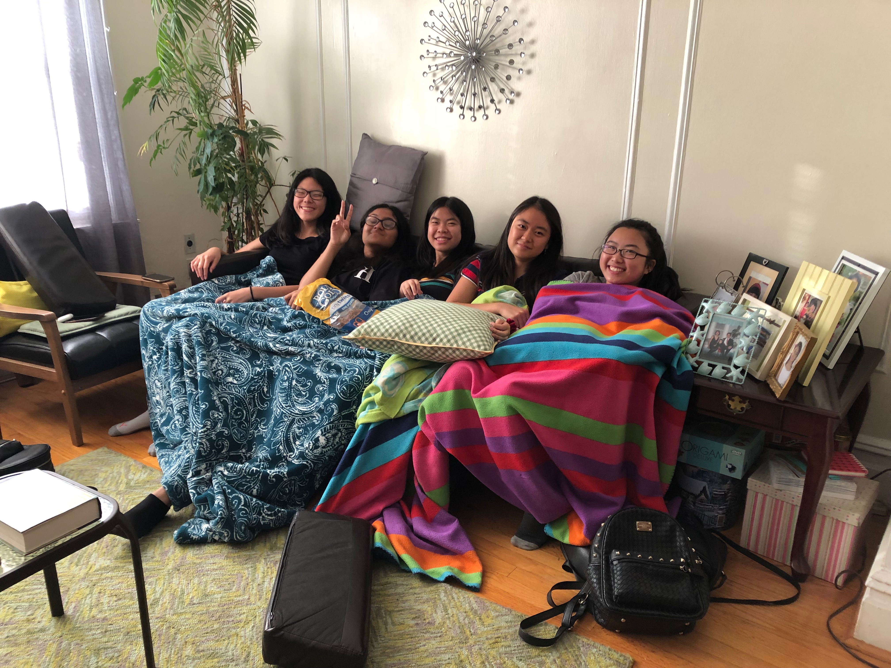

I enrolled in my school's Environmental Science and Biotechnology Summer Research Program. However, I was not able to attend as many days as I wanted to even though I was still an official part of the program. Nonetheless, the activities were super fun and they were held by my freshman APES teacher who is super funny and nice. I even got a free metroacard!!
I also had SYEP over the summer which limited the amount of days that I could attend the research program. SYEP was uneventful, but fun since all we did was watch movies that address real life issues. I was in the Youth Advocacy Group where a law student from Fordham instructed me. The program promoted activism and they give you a stipend of $700 at the end!
I also went to Cancun and the Cruise Anthem of the Seas where the pictures are in the Vacation tab. I went biking, seing dolphins, go karting, indoor skydiving, laser tagging, and eating a lot.
My class at SYEP
The gang from summer research
Since I was a rising junior, I had the option to take Summer Health. I applied and got in which was super exciting because it was all online and I wouldn't have to take health in junior year. I had class from 11:50-1:25, but synchronous classes weren't everyday. This made my schedule pretty free as I could do work whenever I wanted to while having time for something else.
I participated in the Girls Who Code Summer Immersion Program. I learned a lot about web development and created three projects:
I also participated in an APCS Prep Course held by my Intro CS teacher, Mr. Holmes. He taught me the basics of Java and the principles of coding. This was extremely helpful becacuse I didn't take a full year of CS. Without him, I would have been lost for the first two months of APCS!
Throughout my whole summer, I volunteered at Shuang Wen, a pre-k to 8th grade school as a math tutor. I had two students and it was very fun to teach them! The 5th grader was a more challenging to work with than the 8th grader, but I managed to accomodate to their learning styles.
Another popular all girls coding camp is Kode With Klossy. I participated in their 2 week web development program and it was very fun. The hours are much longer than GWC (9:45-3:15) so I learned a lot more about Flexbox and Javascript. I've created multiple projects for KWK such as the photo gallery linked on my vacation page and a resource website concerning women.
The Cooper Union Summer Stem Institute provided me with a full scolarship for their Climate Change and Data Visualization course. We examined climate change and strategies to counteract it while learning coding and data visualizations skills!